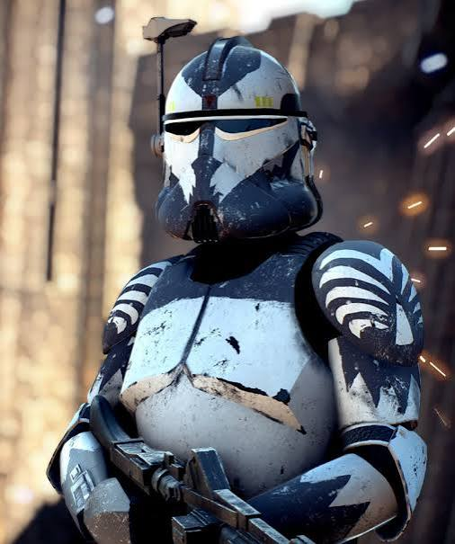
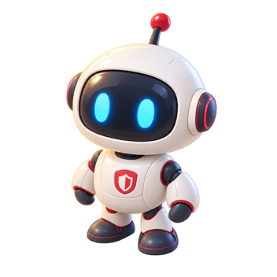

Photo-specific cues
Narrow horizontal visor, raised center ridge, broad cheek/jaw volumes, pale curved shoulder bands, slate/light paneling, muted yellow brow details, and a short side rangefinder.
Virtual office · fourth avatar · design handoff
The supplied armor photograph defines Wolffe's visible costume cues. Rex, Paz, and Cody define the finished family construction. Wolffe replaces the risk slot's display identity while retaining `risk`, `risk-bot`, `risk-console`, the AI & Technology Analyst role, and the red accent.
The photo supplies costume identity only. The production peers supply compact proportions, camera, soft lighting, polished materials, and planted foot contact.





Narrow horizontal visor, raised center ridge, broad cheek/jaw volumes, pale curved shoulder bands, slate/light paneling, muted yellow brow details, and a short side rangefinder.
Oversized rounded helmet, small sturdy torso, short thick limbs, rounded gloves, chunky boots, soft upper-left light, shallow three-quarter camera, and transparent framing.
A small red shield badge remains visible in every pose. The `risk` ID, `risk-bot` key, `risk-console` desk, role responsibilities, and schedules remain intact.
All four idle avatars use the 352 × 352 production box. Wolffe's five normalized poses share the measured alpha-bottom `324/352` and a common planted baseline.
The helmet, markings, rangefinder, badge, camera, light, and boot baseline stay locked while the action changes.


The gray armor, black visor, pale markings, and red badge remain readable on both surfaces. No floor, baked shadow, or selection ring is included in the artwork.
The first samples are the contract sizes: actual 32, 36, and 40 CSS px image boxes. The final samples reflect the current office scene maximum (60 px) and portrait card (64 px).
Wolffe · 32 px · lightWolffe · 32 px · darkWolffe · 36 px · lightWolffe · 36 px · darkWolffe · 40 px · lightWolffe · 40 px · darkScene max · 60 pxScene max · 60 px · darkPortrait · 64 pxPortrait · 64 px · dark